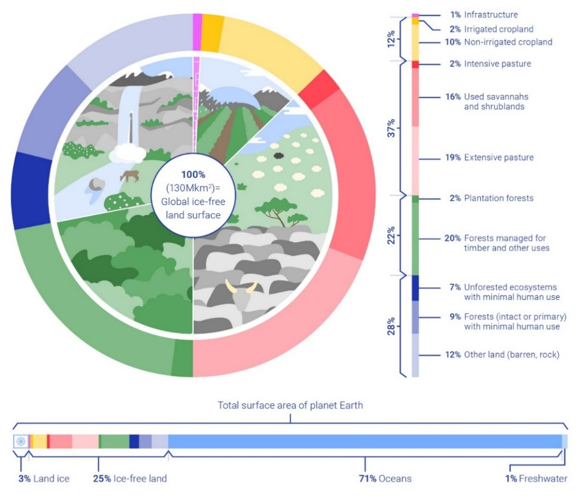
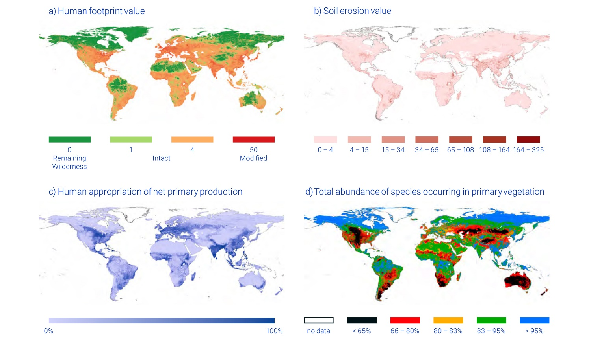
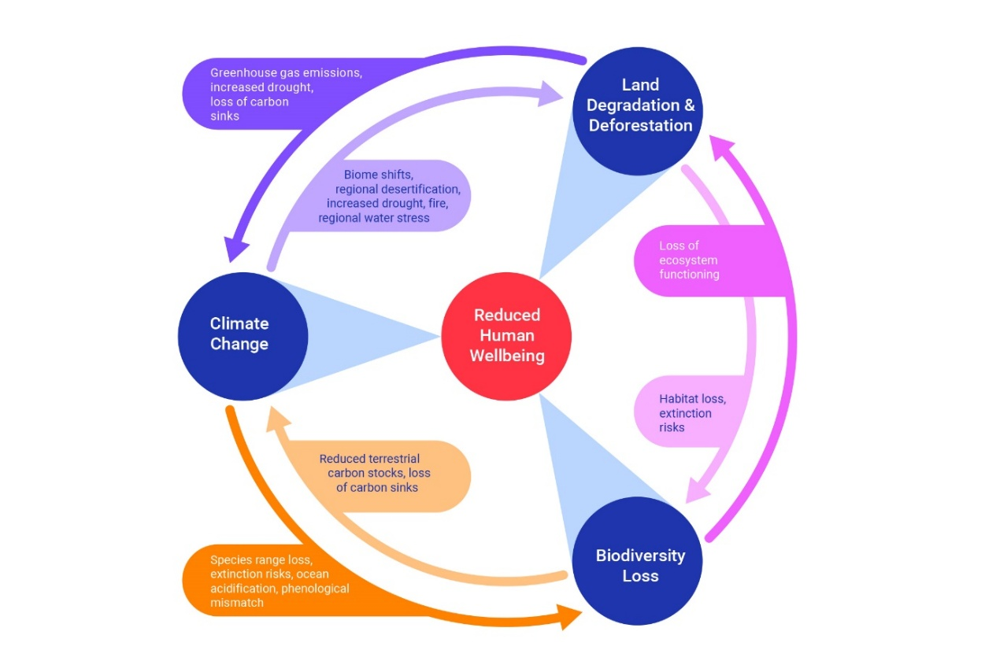
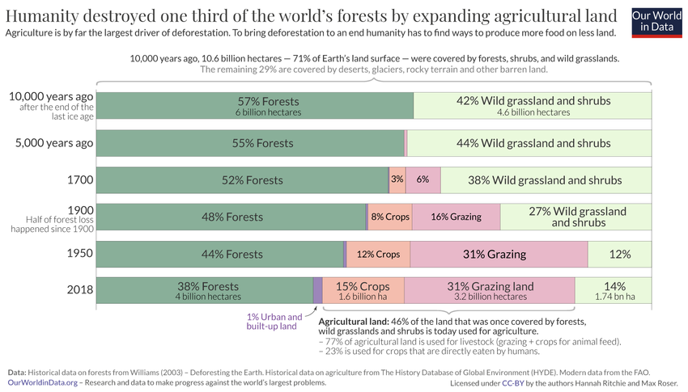
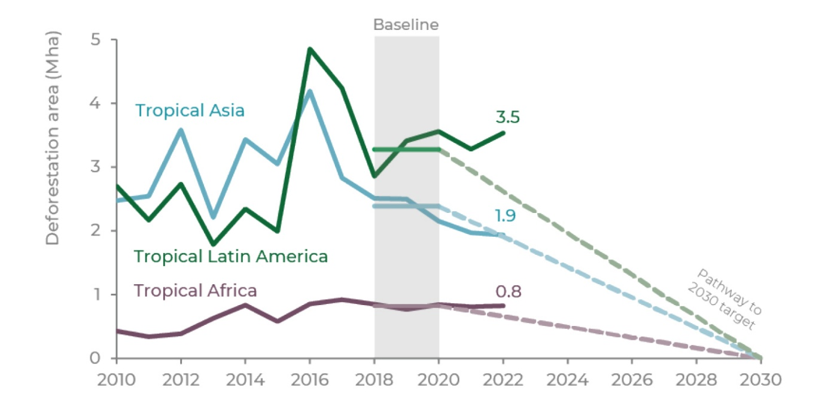
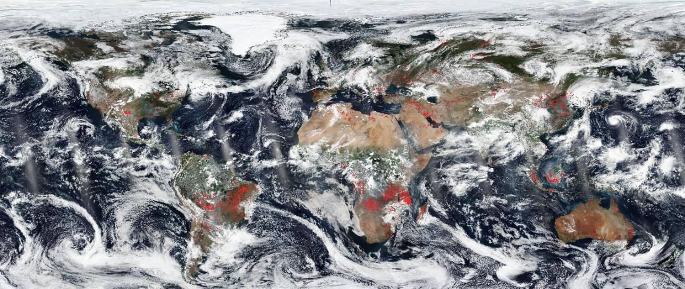
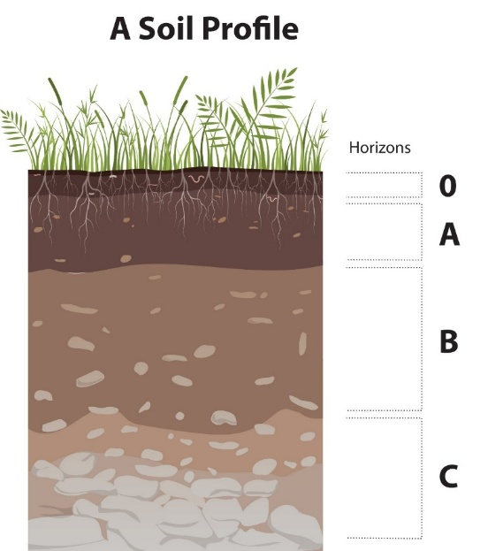

”Climb the mountains and get their good tidings.
Nature’s peace will flow into you as sunshine flows into trees.
The winds will blow their own freshness into you,
and the storms their energy,
while cares will drop away from you like the leaves of Autumn.“
John Muir, The Mountains of California
8. פגיעה בשטחים פתוחים וקרקעות#
שטחים פתוחים הם השטחים שאינם מיושבים, אין בהם פעילות חקלאית או תעשייתית והם משמרים במידה מסוימת את מצב הביוטה לפני התערבות האדם. הדיון בפרק זה מתכתב עם מה שכבר נכתב בפרקים 2 ו-7. שטח היבשות הוא כ-150 מיליון קמ“ר מתוכם כ-20 מיליון מכוסים בקרח. מתוך 130 מיליון קמ“ר הנותרים רק כ-28% נחשבים כאלה שאינם מושפעים (או פחות מושפעים) מפעילות האדם, רובם מוגדרים כאזורים מוגנים (איור 8.1).[1] במסגרת הפרק נציג עדויות לפגיעה בשטחים פתוחים (8.1), ונראה את הקשר ההדוק בין פגיעה בשטחים פתוחים עם פגיעה במגוון הביולוגי (8.2). לאחר מכן, נתאר את הקשר בין פגיעה בשטחים פתוחים ושינויי אקלים (8.3), ונסקור את בעיות הסביבה העיקריות בכמה מבתי הגידול וסוגי הביום (biomes)[2] המרכזיים, כאלו שהפעילות האנושית גרמה להם פגיעה נרחבת עם השלכות גלובליות: יערות (8.4), סוואנות (8.5), אחו-לח, ביצות ואזורי חופים לחים (8.6), האזור הארקטי (8.7). נעבור להסתכלות מקרוב על תהליכי הפגיעה בקרקע (8.8), התווך עליו מתפתח הצומח בכל סוגי בתי הגידול היבשתיים, ונסיים עם ניהול ושיקום של כל הסביבות הללו (8.10-8.9). כפי שציינו בפרק 2, תיקון ההַגְרָעָה (דֶּגְרָדַצְיָה) של שטחים פתוחים וחקלאיים ושל הקרקעות הנמצאות בהם הם אחד המנופים העיקריים לפתרון בעיות הסביבה העיקריות ובכללן התחממות גלובלית.[3]
8.1 עדויות לפגיעה בשטחים פתוחים#
הפגיעה בשטחים פתוחים ובקרקעות איננה תופעה מודרנית. ישנן עדויות רבות לכך בפינות שונות של כדור הארץ, למשל ביוון, כפי שהעיד אפלטון כבר לפני כ-2400 שנה.[4] יש הטוענים ששליש מהאזורים המוגדרים שטחים פתוחים ואשר רובם מוגדרים כאזורים מוגנים סובל מלחצי פיתוח והפרעות אחרות של בני האדם.[5] כתוצאה ממצב זה ישנה השפעה ניכרת של פעילות בני האדם על המתרחש בכל אחת מהיבשות, הן מבחינת שינוי הרכב הצמחייה ובעלי החיים והן מבחינת סחיפת קרקעות. בין הפעילויות האנושיות הגורמות לפגיעה מאסיבית בשטחים פתוחים ולקיטוע בתי גידול ראוי לציין סלילת כבישים ודרכים וכן כרייה של חומרי גלם (ראו פרק 4).[6] למשל, לסלילת כבישים בעולם יש השפעה על שטח של כשישה מיליון קמ“ר (המחברים הניחו שכביש משפיע עד מרחק של 5.5 ק“מ משני עבריו), שטח גדול פי שניים מכל אגן האמזונס.[7] כבר מעל שני עשורים יש הטוענים כי פגיעה בשטחים פתוחים, מדבור (desertification),[8] סחיפת קרקעות והשקעה מאסיבית של סדימנטים (תוצרי סחיפת הקרקעות) ילוו את החברה האנושית במהלך המאה ה-21, וכי לתהליכים אלו עלולה להיות השפעה שלילית משמעותית על הבטחון התזונתי של חלקים ניכרים מאוכלוסיית העולם.[9] נטען גם שחלק מהתהליכים הללו, בעיקר סחיפת קרקעות, הם תהליכים בלתי הפיכים בפרקי זמן של מאות שנים. כמו כן, מחקרים מראים שלמרות מאמצי הרשויות, קצב הפגיעה בשטחים פתוחים עדיין איננו בנסיגה באזורים רבים. זאת על סמך העובדה ששני שליש מסך כל השינויים בשטחים מוגנים בארצות הברית ובאגן האמזונס ב-200 השנים האחרונות, קרו החל משנת 2000. [10]
ישנם הבדלים משמעותיים בין אזורים שונים במידת השפעת בני אדם על השטחים הפתוחים בהם. באיור 8.2 מוצגים ארבעה מדדים של ההשפעה: (1) מִדְרך אקולוגי (כבישים, מתקני תשתית, טראסות מלאכותיות, ועוד), (2) סחיפת קרקעות, (3) החלק היחסי של חקלאות ביצרנות הראשונית, (4) נפיצות מינים מקוריים של צמחים. בארבעתם בולטת השונות הגדולה בין אזורים שונים על פני היבשות. למשל, בסין כ-99% מהאנשים חיים באזורים שעברו התאמות לצרכי האדם במידה חלקית או רבה ורק כאחוז מהאוכלוסייה חי באזורים עם מערכות אקולוגיות טבעיות ומתפקדות בשטחים הפתוחים.[11] באופן כללי, מרכז סין והאזורים בצפון מערבה נמצאים במצב גרוע יותר מצפון-מזרח ודרום סין.
{kind=link}

Fig. 69 איור 8.1: חלוקת סוגים ושימושים של שטח היבשות.#
מקור - Making Peace with Nature (2021) https://www.unep.org/resources/making-peace-nature; ©, Reprinted with permission.
{kind=link}

Fig. 70 איור 8.2: השפעה של בני האדם על השטחים הפתוחים בכל היבשות: (a) מִדְרך אקולוגי, (b) סחיפת קרקעות, (c) החלק היחסי של חקלאות ביצרנות הראשונית, (d) נפיצות מינים מקוריים של צמחים.#
מקור – Making Peace with Nature (2021) https://www.unep.org/resources/making-peace-nature; ©; Reprinted with permission.
8.2 פגיעה בשטחים פתוחים ובמגוון הביולוגי#
לדעת חוקרים רבים הכרסום בשטחים פתוחים הוא אחד הגורמים המרכזיים לפגיעה במגוון הביולוגי (פרק 7). מחקרים רבים תעדו את הפגיעה במגוון המינים (למשל, species richness)[13] בגלל שבירת הרצף (קיטוע) של בתי גידול. מרבית החוקרים את הנושא מסכימים שפגיעה בשטחים פתוחים מסוגים שונים מקטינה את המגוון הביולוגי. מצד שני, ב-2013 וב-2016 התפרסמו מחקרים שתעדו באמצעות ניתוח של תצלומי לווין מגמה של גידול בכיסוי הצמחייה (לא רק חקלאית) על פני היבשות בעשורים האחרונים greening effect)) למרות המשך הפגיעה בשטחים פתוחים,[14] כאשר 70% מהעלייה יוחסה לדישון של פד“ח (\(CO_2\) fertilization)[15] והיתרה התחלקה בין מספר גורמים כמו התחממות גלובלית, זמינות של חנקן, ושינוי בשימושי קרקע.[16] המגמה של גידול בכיסוי צמחיה נמצאה במחקר נוסף שפורסם ב-2017 והסתמך על מדידות של קרבוניל גופרתי (carbonyl sulfide - OCS).[17] מאד סביר שתופעות אלה קורות משום שמינים מסוימים של צמחים מתאימים עצמם טוב יותר להפרעות בשטחים פתוחים ומצליחים להתרבות, בעוד מינים רבים אחרים נפגעים.
8.3 פגיעה בשטחים פתוחים ושינויי אקלים#
קיים קשר בלתי ניתן להפרדה בין אופני פגיעה שונים בשטחים פתוחים ולכן יש לבחון כמה גורמים ביחד. למשל, יש קשר הדוק בין שינויי אקלים, אבדן שטחים פתוחים ופגיעה במגוון המינים, כאשר לכולם ביחד ולחוד יש השפעה ניכרת על איכות החיים של בני האדם (איור 8.3). למשל, יש חוקרים הטוענים שעליית הטמפרטורה (בעיקר כאשר יש הרבה ימים עם טמפרטורות מעל 32 מעלות) עלולה לפגוע ביכולת הצימוח של יערות טרופיים[18] ולגרום לשינויים בפעילות אנזימטית של מיקרואורגניזמים החיים בקרקע מה שעלול לגרום לשינויים בזמינות ומסיסות של נוטריינטים (בעיקר N, P, C).[19] מצד שני, ב-2025 התפרסמה עבודה שהראתה כי לעצים ביערות טרופיים (בעיקר angiosperms)[20] היתה עד כה עמידות טובה מאד לאירועי בצורת, אולם לא בטוח שזה יימשך כאשר הטמפרטורות ימשיכו לעלות.[21] אכן, בשנת 2026 ההתפרסמה עבודה שהראתה שיש פגיעה בעיקר בעצים מהירי צימוח באגן האמזונס בעקבות ארועי בצורת,[22] ארועים שתכיפותם ועוצמתם עלו עם הזמן,[23] והם צפויים לעלות אם ההתחממות הגלובלית תמשיך.
ניסיון שנעשה לפני מספר שנים למצוא קשרים בין שינויי אקלים ושינויים במגוון המינים, הראה כי יש להתמקד בתגובה של מינים המגלים את הרגישות הגבוהה ביותר לשינויי אקלים ולהתקדם מהם אל אלה התלויים בהם.[24] עוד נמצא שפיזור משקעים ופוטנציאל אידוי ודיות (evapotranspiration)[25] הם הפרמטרים האקלימיים המשמעותיים ביותר המשפיעים על שינויי מינים.[26] בשנים האחרונות נעשו מספר ניסיונות להעריך את השינויים בקצב אידוי מצמחים (דיות - transpiration)[27] בעקבות ההתחממות הגלובלית. הערכה האחרונה היא שהיתה עליה של 0.61-0.79 מ“מ בשנה בקצב הדיות בין 1980 ל-2021, כאשר הגורם העיקרי לכך הוא גידול באינדקס שטח העלים[28] ושהתחממות גלובלית השפיעה פחות, אם כי יתכן שהגידול באינדקס עצמו נבע מהתחממות גלובלית.[29]
לפגיעה בשטחים פתוחים בשילוב עם שינויי אקלים יש השפעות מרחיקות לכת (אפקטים סינרגטיים - synergetic effects)[30] על תפקוד המערכת האקולוגית[31] ולכן הנושא מחייב מעקב וניטור מתמיד.[32] כך למשל, פגיעה בשטחים פתוחים בשילוב עם שינויי אקלים עלולה לגרום להאצת המעבר של וירוסים בין מיני בעלי חיים שונים. יש כעשרת אלפים סוגים של וירוסים שונים היכולים לפגוע בבני אדם, אולם כיום רובם שוכנים ביונקים אחרים ואינם גורמים נזק. עקב הפגיעה בשטחים פתוחים, שינויי האקלים והידוק הקשר בין בני אדם ובעלי חיים מבויתים מחד למיני בר מאידך, מיני וירוסים מסוכנים עלולים לעבור לבעלי חיים מבויתים ולבני אדם.[33] ניתן גם למצוא עדויות לקשר בלתי צפוי בין הפגיעה בשטחים הפתוחים לשינויי אקלים. מחקר מ-2014 הראה שבעקבות עקירת עצים מאסיבית בזמן סופה קשה בדרום-מזרח אנגליה, באזורים שנפגעו פגיעה קשה חזרו לצמוח מינים מקומיים והרבה פחות מינים פולשים.[34] דוגמא אנקדוטית נוספת היא השפעה של מטיילים בקליפורניה על יכולת ההתמודדות של סנאים שוכני קרקע עם שינויי אקלים.[35]
{kind=link}

Fig. 71 איור 8.3: הקשרים הרב-כיווניים בין שינויי אקלים, פגיעה בשטחים פתוחים וירידה במגוון המינים והשפעתם על איכות החיים של בני אדם.#
מקור - Making Peace with Nature(2021) https://www.unep.org/resources/making-peace-nature; ©; Reprinted with permission.
8.4 יערות#
יערות מכל הסוגים (טרופיים, ממוזגים, צפוניים, מחטניים, נשירים) עומדים במרכז תשומת הלב הציבורית והמדעית בגלל תרומתם הגדולה לשימור מגוון המינים, למחזור הפחמן בכדור הארץ, לשינויי אקלים מקומיים וגלובליים, למניעת סחיפה, לקיומן של קהילות מקומיות ועוד.[36] חשוב להדגיש שרוב סוגי היערות עניים יחסית במינים (להוציא יערות טרופיים שבם יש שפע מינים), אולם היער מהווה בית גידול חשוב וחיים בו מינים שאינם יכולים להתקיים במקום אחר.
8.4.1 פגיעה ביערות#
מאז סוף תקופת הקרח האחרונה לפני כעשרת אלפים שנה, העולם איבד כ-20 מיליון קמ“ר של יערות (כשליש משטח היערות) שהפכו בעיקר לאזורי מרעה ושדות חקלאיים (איור 8.4). רק מאז 1990 העולם איבד כ-1.8 מיליון קמ“ר נוספים של יערות, שטח השווה לשטחה של לוב. החל מתחילת שנות האלפיים ועד 2020, הקצב של הרס היערות הואט, אולם הוא עדיין גדול מידי. כללית, יש אבדן יערות טרופיים בדרום אמריקה, באפריקה ובדרום מזרח אסיה, וגידול בשטחם של יערות ממוזגים באירופה ובצפון אמריקה,[37] אם כי התמונה איננה חד משמעית.[38] בשנת 2022 נעשתה הערכה מחודשת של קצב העלמות היערות, ובה צוין שאמנם יש מגמה של האטה בקצב בירוא היערות (גם הטרופיים), אולם ההאטה איננה מספקת על מנת להגיע ליעד של אפס בירוא יערות בשנת 2030 (איור 8.5),[39] במיוחד לאור העובדה שהאטה בקצב בירוא יערות באזורים מסוימים, למשל באירופה ובסין מלווה בהגברת הבירוא באזורים אחרים על מנת לפצות על הדרישה למוצרי עץ.[40]
אחד המקומות הזוכים למחקר רב הוא אגן האמזונס בו שוכן יער הגשם הטרופי הגדול בעולם. מחקרים רבים בחנו את הנזק שנגרם למגוון המינים, לתפקוד המערכת האקולוגית וליכולתה לקבע פחמן בחלקים שונים של האגן.[41] לדוגמא, מאמר מקיף שבדק את מידת הנזק של בירוא יערות ושריפות, הציג תמונה עגומה למדי והראה כיצד שינויים במדיניות השימור והאכיפה השפיעו על מידת הנזק הנגרם ליער האמזונס.[42] מחקרים מוקדמים יותר הצביעו על בירוא היער כגורם שעדין לא הביא להעלמות מינים משמעותית (ב-2008), אבל עלול לגרום לכך עד 2050.
למרות שמרבית תשומת הלב כיום בהקשר של יערות טרופיים מופנית ליער האמזונס, יש לא מעט מחקרים שדנים בתהליכים המתרחשים ביערות טרופיים אחרים, הן בהווה והן בעבר. בין היתר, יש עדויות רבות לכך שהשפעת האדם על יערות איננה תופעה שהחלה בעת החדשה, ושבמקרים רבים הפרעות אנתרופוגניות השאירו את חותמן לזמן רב, אם כי על פי רוב בקנה מידה קטן בהרבה לעומת ההשפעות העכשוויות של בני האדם.[54] לאחרונה פורסם מחקר על חשיבות החיבוריות-קישוריות של שטחים לא מופרים לתפקוד המערכת האקולוגית בבורנאו (שבים סין הדרומי), באזורים בהם יש שילוב של חקלאות בשולי היער הטרופי.[55] מחקר נוסף הראה שמחזור החנקן ביערות פורטו-ריקו הושפע גם הוא מפעילות חקלאית בשולי היערות.[56] מחקר שנערך בדרום מזרח אסיה העלה לקדמת הבמה את הנזק הגדול של פריצת דרכים לא חוקיות (ghost roads) הנוגסות בשטחים נרחבים של היער ויוצרות פגיעה ארוכת טווח באזורים שהיו עד לאחרונה בלתי מופרעים.[57] בירוא יערות לצרכי חקלאות ובמיוחד להפקת דלק מצמחים (למשל, ביו-דיזל, ביו-אתנול) באמצעים שונים כולל שריפות (בהן נדון בתת הפרק הבא) הוא גורם מרכזי המכניס לתמונה חברות רב-לאומיות גדולות כפי שצוין בפרק 3. ישנם מקומות בהם נראה שחלק מההאטה בברוא יערות שנצפתה לאחרונה נובעת מאינטרסים של חברות אנרגיה שבעבר בראו שטחים גדולים, ועכשיו הן משהות את נטיעת הגידולים לייצור אנרגיה משיקולים שונים (למשל עצי דקל לייצור שמן דקלים – palm oil).[58] מצד שני, לאחרונה דווח שיצירה של מובלעות יער בתוך מטעים של דקלי שמן תרמה מאד לשימור המגוון הביולוגי באזור.[59]
{kind=link}

Fig. 72 איור 8.4: שינויים בשטח היערות וסוגי שטחים אחרים בעשרת אלפי השנה האחרונות.#
מקור – OUR WORLD IN DATA, https://ourworldindata.org/forest-area ; Reprinted with permission.
Hectare = 0.01 km^2^
{kind=link}

Fig. 73 איור 8.5: קצב בירוא היערות בעבר ובהווה, והקצב הדרוש עד שנת 2030 על מנת לעמוד ביעד של התחממות גלובלית מירבית של 1.5 מעלות צלזיוס. למרבה הצער, עדכון של הדו“ח בשנת 2024 מציג תמונה עגומה.#
מקור – Forest Declaration Assessment Partners (2023) www.forestdeclaration.org; Reprinted with permission.
8.4.2 שריפות יער#
שריפת יערות היא בעיה אקוטית בקנה מידה עולמי הנמשכת ואף מחמירה כיום (איור 8.6). בשנת 2024 שריפות יער היו הגורם העיקרי לפגיעה ביערות, אף יותר מכריתת יערות.[61] זאת אחת הדוגמאות הבוטות ביותר לפגיעה רב-ממדית בסביבה. שריפות יער גורמות לשחרור גזי חממה;[62] לפגיעה אנושה במערכות אקולוגיות חשובות ובגופי מים; להרחפת אבק[63] ולפגיעה בריאותית באנשים הנחשפים לזיהום האוויר שהן יוצרות;[64] לכניסת מינים פולשים;[65] לסחיפה מוגברת של קרקעות;[66] להגברת ההיתכנות של שטפונות וזרימת סדימנטים (debris flow);[67] וכן לזיהום מקורות מים במשך מספר שנים בעקבות השריפה.[68] מעבר לזה, לאחרונה התפרסם מחקר שטען שחלק מהחומרים המשמשים לכיבוי שריפות מכילים חומרים מסוכנים לבריאות (בעיקר קדמיום (Cd) וכרומיום (Cr)) העלולים לפגוע בחי ובבני אדם.[69] מצד שני, לאחרונה דווח שיתכן ששריפות ביערות צפוניים (boreal forests) גורמת להפחתת ההתחממות הגלובלית ב-12%, וההתחממות של הרחבים הגבוהים ב-38%, בגלל השפעתן על מאזן הקרינה באמצעות שינוי בתכונות עננים כגון גודל הטיפות.[70]
למרות ששריפות יער הן תופעה טבעית שקרתה לאורך ההיסטוריה גם ללא התערבות האדם, היקף שריפות היער כיום עולה משמעותית על קצב השריפות שמהן המערכת האקולוגית של היער יכולה להשתקם. גם עונת השריפות מתארכת בעיקר בגלל תקופות יובש ארוכות יותר והצטברות של יותר חומר דליק.[71] מעבר לכך, מתועדת החמרה ברמת זיהום האוויר שהן גורמות,[72] יש עליה במספר האנשים המושפעים מהן,[73] ובמקביל ישנה התגברות דרמטית של תכיפות ועוצמת שריפות יער בכלל[74] ובעיקר באזורים עם משטר לחות בינוני (לא לחים מידי ולא יבשים מידי).[75] יש גם יותר שריפות יער באזורים בהם לא היו כמעט שריפות בעבר, למשל בחוג הארקטי (יערות טייגה או boreal)[76] ובאזורים הטרופיים (לא כולל שריפות מכוונות).[77] שם יש גם עדויות ראשוניות לתרומתן של שריפות יער לשחרור כספית (Hg) שהיתה אצורה בקרקע.[78]
התחממות גלובלית אחראית במידה רבה על המגמות הללו[79] בעיקר ביערות שמחוץ לאזור הטרופי,[80] אבל ישנם גם גורמים אחרים המגבירים את המגמה: הצתות מכוונות – ראו למטה, הֵערכות לא נכונה ולא מספקת – ראו המקרה של לוס אנג’לס[81] בראשית 2025 ועוד. אמנם עד 2023 היו עדויות לירידה מסוימת בכמות השטח הנשרף בעולם (ביערות ובסוואנות), אך ברור שקצב הירידה רחוק מלהיות מספק[82] ו-2024 היתה שנת שיא בכמות והשטח של שריפות היער בעולם, למעט דרום מזרח אסיה.[83] בדרום אמריקה (כולל חלק מאגן האמזונס) תכיפותן ועוצמתן של שריפות עלתה בשנים האחרונות (והגיע לשיאה ב-2024) בגלל עליה בתכיפותם של ימים עם תנאי מזג אוויר חמים ויבשים (dry compounds).[84] זאת למרות שהוצעו דרכים לנבא את הסיכוי לפריצת שריפות.[85] בנוסף, באגן האמזונס בירוא היערות המאסיבי מלווה בהרבה מקרים בשריפות מכוונות או כתוצאה מרשלנות.[86] שריפות אלה כרוכות לעיתים בהכנסת גידולים חקלאיים[87] או בקר לשטח שנשרף. להכנסת גידולים חקלאיים ובקר יש השפעה סביבתית גדולה על היער עצמו ועל בעלי החיים הנמצאים בו בגלל סחיפת קרקעות, פגיעה בפוריות הקרקע, זיהום האטמוספרה ומקורות המים, וכן פגיעה ביכולת קיבוע הפחמן של אגן האמזונס.[88] לאחרונה התגבר החשש מהנזק הבריאותי והסביבתי של שריפות יער הקורות בקרבת ישובים,[89] כאשר השריפה בהוואי בקיץ 2023 ובלוס אנג’לס בינואר 2025 הן דוגמאות לפוטנציאל ההרס של שריפות כאלה.[90]
לעיתים לשריפות יער יש תוצאות מפתיעות המנוגדות לאינטואיציה. למשל, שריפות יער באלסקה גרמו לכך שהמין הנפוץ לפני השריפה, אשוח שחור (black spruce), שגדל לאט, הוחלף על ידי עצים רחבי עלים הגדלים מהר יותר, ועקב כך, לא היה אובדן של חומר אורגני מהיער בעקבות השריפה על פני טווח של מספר שנים.[91] למרות זאת יש חוקרים הטוענים שאין בכך כדי לפצות על ההפרעות למערכת האקולוגית בכללותה.[92]
{kind=link}

Fig. 74 איור 8.6: תמונת לווין של שריפות (אזורים אדומים) ברחבי העולם ב-19 בספטמבר 2019.#
מקור – NASA, Worldview ; Reprinted with permission.
8.4.3 פגיעה ביערות ושינויי אקלים#
לבירוא יערות והפיכתם לשטחים חקלאיים, או לשינויים אחרים בשימושי קרקע כמו עיור יש השפעה ניכרת על האקלים ברמה האזורית והעולמית, למשל ירידה במשקעים.[93] מצד שני יערות נפגעים בעקבות שינויי אקלים.[94] כלומר מדובר כאן בתהליך דו-כיווני[95] שיש בו סכנה ליצור משוב חיובי (בירוא יערות יתרום להתחממות גלובלית שתגרום לפגיעה מוגברת ביערות – ראו גם את פרק המבוא). נטען שלבירוא יערות יש השפעה השקולה ל-50% מהשפעת פליטות גזי חממה ברמה הגלובלית (כדאי להשוות טענה זאת עם איור 5.1 בפרק 5). [96] זאת משום שתרומת שינויים בשימושי קרקע (כגון כריתת יערות) לפליטות פד“ח גדולה יותר מרוב ההערכות,[97] מה שמצביע גם על האפשרות שלקרקע יש פוטנציאל גדול יותר ממה שהעריכו עד כה, לקלוט פד“ח מן האטמוספרה.
גם בהסתמך על הערכות מקובלות, אבדן השטח של יערות והדרדרות המערכת האקולוגית של היער מטרידות משום שיערות וקרקעות יער מכילים קרוב למחצית מכמות הפחמן האורגני הנמצא על פני השטח של היבשות. בסוף שנת 2023 התפרסם מאמר שניסה לאסוף את כל העדויות לגבי תרומת יערות לקליטת פחמן וסילוק פד“ח מן האטמוספרה. המאמר העריך שמתוך פוטנציאל סילוק כולל של 226 (151 – 336) גיגה-טון פחמן, כ-60% יכול להיות מושג באמצעות ממשק נכון של יערות קיימים והשאר יגיע מאזורים בהם יערות נהרסו או נפגעו לאחרונה.[98] ישנם גם דיווחים שפגיעה ביערות גורמת לאבדן נוטריינטים[99] עם דגש מיוחד על זרחן,[100] ולשחרור של מיקרואורגניזמים מזיקים הגורמים למחלות.[101] לכן, יש חשיבות גדולה לזיהוי תהליכי הרס ביערות כבר בשלבים מוקדמים, למשל באמצעות שיטות של חישה מרחוק.[102] במקביל נמצא שיערות טרופיים לא תמיד מצליחים לשנות את הרכב המינים שלהם בקצב הנדרש כתגובה להתחממות הגלובלית.[103] אכן, במספר מחקרים אובחנה פגיעה אפשרית ביערות טרופיים וממוזגים עקב שינויי אקלים.[104] לעומת זאת, ברחבים הגבוהים (קרוב לקטבים) דווח על פוטנציאל התרחבות של יערות מחטניים של אזורים קרים לכוון הקטבים בגלל התחממות גלובלית, תופעה שיכולה להגדיל את קיבוע הפחמן.[105] מצד שני, כפי שנראה בהמשך הפרק, ברחבים הגבוהים קיים חשש שהפשרת קרקעות קפואות תשחרר לאטמוספרה כמות גדולה של גזי חממה (בעיקר מתאן).
8.5 סוואנות#
8.5.1 סוגי סוואנות וחשיבותן הסביבתית#
סוואנות והצומח בהן הן הביום (biome) היבשתי הנרחב ביותר בכדור הארץ מלבד מדבריות.[106] באופן כללי, ניתן לחלקן לשתי קבוצות עיקריות (1) סוואנות הנמצאות בשולי מדבריות חמים, (2) סוואנות של אזורים קרים (tundra), הנמצאות מצפון ליערות הצפוניים (boreal forest, taiga) או מעל קו העצים ברכסי הרים. לאחרונה התפרסמו מספר מאמרים שמצביעים על חשיבות הסוואנות למין האנושי,
8.5.2 תהליכי מדבור#
פגיעה בביום של הסוואנה מתכתבת עם אחת התופעות הסביבתיות המדוברות היום – מדבור (desertification).[112] המונח מדבור מתייחס להתפשטות של רצועת המדבריות העולמית על חשבון הסוואנות, בעיקר המדבריות החמים, הנמצאים בין קווי הרוחב 15 ו-30 מעלות צפון ודרום. תהליך המדבור מלווה בירידה בתכולת מים וחומר אורגני בקרקע, בהצטברות מלחים ובהרס מבנה הקרקע. תהליכים אלה הופכים את הקרקע לפחות פורייה ולזמינה יותר להרחפה על ידי רוח. שולי מדבריות כוללים בין היתר שדות דיונות, ערוצים של נחלי אכזב ואגמים עונתיים המהווים מקור עיקרי לחומר דק (אבק) שמוסע על ידי רוחות למרחקים גדולים. כמות האבק המתרומם מאזורים אלה גדלה ככל שתהליך המדבור מתקדם. האבק המדברי מהווה מצד אחד מקור לנוטריינטים (למשל אבק שמקורו בסהרה מדשן את אגן האמזונס)[113] ומצד שני תורם לזיהום אוויר (נדון בנושא זה בפרק 11). לפי הערכות, רצועת המדבריות התפשטה בצורה ניכרת בעשורים האחרונים בגלל מגוון של סיבות ובראשן שינויי האקלים.[114] יש הגורסים שסיבות חשובות נוספות כוללות רעיית יתר (ראו בהמשך) ושימושי קרקע לא נכונים, במיוחד במדינות עניות יחסית. אחרים טוענים שרעייה בארצות עניות מגיבה מהר וביעילות לעקות (stress) סביבתיות ואקלימיות, ולכן אינה יכולה להיות גורם מרכזי בתהליך מדבור.[115]
כיום נעשים מאמצים רבים באפריקה,[116] אסיה (בעיקר סין),[117] אוסטרליה[118] וצפון אמריקה[119] על מנת לעצור ואף להפוך את תהליכי המדבור. מאמצים אלה הם בחלקם פועל יוצא של אירוע מכונן הנקרא ”אגן האבק“ (Dust Bowl)[120] שהתרחש במערב התיכון של ארצות הברית בשנות השלושים של המאה הקודמת. באותן שנים, קרקעות נסחפו בקצב מוגבר על ידי שטפונות ורוחות שגרמו לסופות אבק. ”אגן האבק“ קרה בעקבות שיטות עיבוד קרקע שגויות בעשורים שקדמו לאירוע והוא היה מלווה במשבר עמוק בקהילות המערב התיכון של ארה“ב.[121] אחד המחקרים בנושא בחן את הקשר בין תופעת ה-Dust Bowl והיחס בין צמחי 3C ו-4C, כאשר בניגוד למצופה, צמחי 3C החליפו צמחי 4C האמורים להיות מותאמים טוב יותר לתנאי חום ויובש, כנראה בגלל ריבוי הגשמים בעונה הרטובה.[122] עבודה זאת עולה בקנה אחד עם מחקרים ניסיוניים על תגובות מפתיעות של צמחי 3C ו-4C לשינויים בריכוזי פד“ח.[123] בשנת 2026 התפרסם מאמר שטען כי ההתמודדות הנכונה עם תהליכי מדבור היא באמצעות אימוץ שיטות של חקלאות מקיימת (regenerative agriculture - ראו פרק 2) בעיקר מחזור זרעים וטיפוח מרעה (pasture cultivation), ומדגים זאת באמצעות ניתוח המתרחש בצפון מערב סין.[124]
8.5.3 רעייה ורעיית יתר#
כפי שהראינו בפרק 2, וכפי שמופיע באיור 8.2, יותר משליש משטח היבשות משמש לרעיה שרובה קורית בסוואנות. בעשורים האחרונים הוכנסו כמויות גדולות של בקר גם לאזורים נרחבים באגן האמזונס שבוראו מיער, וגרמו שם לנזקים סביבתיים רבים (סחיפה מוגברת, זיהום מקורות מים, הידלדלות של הקרקע משאריות הנוטריינטים שהיו בה, ועוד). השאלה כיצד לגדל בעלי חיים בסוואנה בצורה נכונה ולמנוע נזק או אף לשפר את מצב המערכת האקולוגית בהיבטים של מניעת סחיפת קרקעות (ראו בהמשך), שמירה על המגוון הביולוגי, שמירה על איכות מי נגר (ראו פרק 9), היא שאלה חשובה מאד מבחינה סביבתית ואקולוגית, והיא עולה לדיון בספרות המקצועית חדשות לבקרים. הקשר שבין אוכלי עשב והתפתחות התנאים הסביבתיים (שינוי במגוון המינים, תכולת חומר אורגני בקרקע, סחיפת קרקעות, ועוד) באזורי סוואנות בעבר ובהווה נחקרו על ידי מספר גדול של קבוצות מחקר.[125] במסגרת הדיון בנושא, יש הטוענים כי רעיית יתר, או רעייה לא מקיימת היא אחד הגורמים העיקריים למדבור, ויש כאלה הטוענים שהאשם איננו ברעיית יתר אלא בסיבות אחרות כגון שינוי בשימושי קרקע, שינויי אקלים, הטיית מקורות מים, ועוד.
8.6 אחו-לח, ביצות ואזורים לחים חופיים (wetlands, salt marshlands, swamps)#
באזורים שונים על פני היבשות מתקיימים תנאים המאפשרים למים להצטבר על פני או בסמוך לפני השטח באופן המאפשר היווצרות של גופי מים רדודים מאד או קרקעות רוויות במים. אזורים אלה נקראים ביצות בשפה לא מקצועית. למעשה יש סוגים שונים של ביצות בהתאם למידת ההצטברות של מים על פני השטח, למליחות המים ולמיקומם הגיאוגרפי. הסוגים העיקריים בהם נדון כאן הם: אחו-לח וביצות (wetlands and swamps) ואחו-לח חופיים (salt marshlands ויערות מנגרובים).[127] לכולם יש חשיבות סביבתית גדולה מאד, כולל תרומה לקיבוע פחמן,[128] שמירה על המגוון הביולוגי,[129] שימור קרקע ומים, סינון עודפי נוטריינטים (למשל משדות חקלאים – ראו פרק 2).[130] יערות מנגרובים מצידם מסייעים בהגנה על הסביבה החופית והימית, בסינון מזהמים, בהקטנת נזקי גלים ושיטפונות וביצירת בית גידול ליצורים רבים,[131] כולל מדגרה לדגיגים.[132] אזורי אחו-לח (ויערות מנגרובים) הם משתתפים פעילים במחזור הפחמן, בין היתר כמבלעים (sinks) וכפולטים (sources) של מתאן. הם יכולים לתרום תרומה משמעותית יותר או פחות בהתאם לדינמיקה של אירועי הרטבה וייבוש וכן בהתאם לקצב עליית הטמפרטורה.[133] האזורים הללו הם דוגמא טובה להגנה מבוססת-טבע מפני אסונות טבע (Ecosystem-based Adaptation - EbA).[134] דוגמאות נוספות להגנה מבוססת-טבע הן ”מקום לנהר“ שיוזכר בפרק 9, ושוניות אלמוגים שיוזכרו בפרק 10.
למרבה הצער, כל סוגי אחו-לח וביצות נמצאים בשולי העניין המדעי והציבורי ואינם זוכים להגנה מספקת[135] בהשוואה ליערות,[136] למרות שהם נפגעים פי שלושה מהר יותר ויש הערכות שכ85% מהם כבר נעלמו.[137] יתרה מזאת, לעיתים מאמצים להגן על אקוסיסטמות מיוערות מובילות לפגיעה מוגברת באחו-לח, כמו למשל במקרה של אגן האמזונס ואזורי אחו-לח ב-Cerrado.[138] יש גם עדויות ששינוי בשימושי קרקע בשילוב עם התחממות גלובלית גורמים לעליה בתכיפות של שריפות באזורי ביצות.[139] ישנם גם מחקרים המצביעים על כך שביצות באירופה נמצאות במגמת התייבשות הנמשכת כבר כ-300 שנים, אם כי לעיתים היו גם מגמות הפוכות של הגברת פעילות וקיבוע פחמן בביצות.[140] לראיה, באלף הראשון לספירה היו פחות ביצות מאשר במאות השנים האחרונות, אבל התייבשות הביצות בעת המודרנית חריפה יותר מאשר ההתייבשות בתקופה היבשה יחסית של האלף הראשון לספירה.[141] לאחרונה יש מצד אחד מאמצים התחלתיים לשקם אזורי ביצות,[142] ומצד שני שינויי אקלים והטיית מים לחקלאות המסָכנים אזורי אחו-לח בארצות רבות.[143] חשוב לדעת שברוב המקרים אין תחרות על משאבים בין אזורי אחו-לח ויערות והם מהווים מערכות אקולוגיות משלימות. במקרה שבו יש התלבטות בין שיקום אחו-לח או יער, יש לבחון את מכלול ההיבטים ולקבל החלטה מושכלת, שיכולה להיות שונה במקומות שונים או בנסיבות שונות.
8.7 האזור הארקטי#
באזור הארקטי יש כ-23 מיליון קמ“ר של קרקע קפואה (permafrost), כאשר הולכות ומתרבות העדויות לכך שחלקים ממנה מפשירים בקצב מהיר ביותר. האצת ההפשרה נובעת מהתחממות האזור הארקטי בקצב גדול פי שתיים עד ארבע מהממוצע העולמי (Arctic amplification).[144] לתהליך ההפשרה יש השלכות מרחיקות לכת על מחזור הפחמן (שחרור פד“ח ומתאן לאטמוספרה),[145] על הרכב המערכת האקולוגית של אזורים אלה, על שינויים במשטר זרימה של נהרות,[146] על קצבי ארוזיה של קווי החוף ועל יציבותם של מבנים ומתקני תשתית.[147] בין 1979 ל-2011 תועדה נסיגה של כיסוי שלג או קרח בקצב של כ-18% לעשור באזורים יבשתיים, מה שגרם לחשיפה של קרקעות קפואות, וכ-10% לעשור באזורים ימיים.[148] בהקשר זה ראוי לציין שבעשורים האחרונים תועדו גם קרחונים הרריים שדווקא גדלו ולא נסוגו (לא באזור הארקטי), אולם חשוב להדגיש שמדובר בתנאים ייחודיים ונדירים יחסית.[149] בין 1992 ל-2013, במקביל לשינויים שתוארו למעלה, תועדה גם עלייה ניכרת בצפיפות של מתקני תשתית באזור הארקטי, בעיקר צפון סקנדינביה, רוסיה ואלסקה ופחות בקנדה, מה שהגביר את התאורה בלילה.[150] מצד אחד זאת עדות לנוכחות גדלה של בני אדם באזור הארקטי, ומצד שני תאורה לילית מהווה מטרד עבור בעלי החיים באזור.
ישנם אזורים בחוג הארקטי שסובלים מזיהום של מתכות וגופרית[151] ושהפשרת הקרקעות בהם עלולה לשחרר כמויות גדולות מאד של חומרים אורגניים מזיקים ומתכות רעילות (הדיווח מאזור ההימליה הגבוה)[152]. למשל, כמות הכספית האצורה בקרקעות קפואות גדולה מכמות הכספית הנמצאת בקרקעות רגילות + מי האוקיינוסים + אטמוספרה. [153] לאחרונה אף דווח שחלק ניכר מהנהרות הזורמים באזור הארקטי באלסקה נצבעים בכתום עקב תהליכי חמצון בקרקעות המופשרות, המלווים בשחרור מואץ של סולפט וברזל למים (כנראה חלקיקים של ברזל תלת ערכי) וכן מתכות רעילות.[154] שינויים דרמטיים תועדו גם באגמים במערב גרינלנד (ראו פרק 9).
הקרקעות הקפואות מכילות כמות גדולה ביותר של פחמן, שאצור בהן כחומר אורגני שלא התפרק. למעשה, מדובר בכמות הגדולה בערך פי שניים מכמות הפחמן הנמצאת באטמוספרה. ישנם חילוקי דעות בקהילת החוקרים לגבי השפעת ההתחממות הגלובלית על מאגר הפחמן בקרקעות של האזור הארקטי. מצד אחד יש חוקרים החוששים מאובדן ניכר של פחמן, בעיקר עקב שחרור מתאן[155] ועקב עליה בתכיפותן של שריפות,[156] ואילו אחרים טוענים שאובדן הפחמן יפוצה עקב עלייה בקצב קיבוע פחמן בזכות ההתחממות והגברת היצרנות הראשונית באזורים אלה.[157] יש גם מחקרים הטוענים שפירוק הפחמן האצור בקרקעות של האזור הארקטי מואט משמעותית על ידי מינרלים הנמצאים בקרקע.[158] אכן, בשנת 2018 התפרסם מאמר שטען כי כמות הפחמן שהייתה אצורה בקרקעות קפואות בשיא עידן הקרח באזור הארקטי הייתה ככל הנראה נמוכה ב-400 גיגה-טון מכמות הפחמן האצורה כיום בקרקעות קפואות, ביצות וקרקעות לא קפואות באותו תא השטח, בגלל שהיצרנות הראשונית וקיבוע פחמן כיום גבוהים יותר באזורים אלה. הבדל נוסף בין שיא תקופת הקרח וההווה הוא בהתפלגות שונה של פחמן בקרקעות. בשיא תקופת הקרח רוב מכריע של הפחמן היה אגור בקרקעות קפואות, ואילו כיום הוא מתפלג בין קרקעות קפואות, קרקעות לא קפואות וביצות.[159]
מחקרים רבים מצביעים על השפעות שינויי האקלים על מגוון המינים באזור הארקטי גם ברמת החברה,[160] על נדידת מינים לקווי רוחב גבוהים בעקבות התחממות גלובלית ועל הצורך להגדיר אזורי מפלט שבהם חברת הצומח ובעלי חיים ארקטיים יוכלו לשרוד.[161] לאחרונה התפרסם מחקר שהראה כי התקדמות צפונה של היער הצפוני (boreal forest, taiga)[162] היתה משמעותית יותר באזורים קרובים לחוף בהם היתה נסיגה של קרח ימי שהגבירה את כמות המשקעים (בעיקר שלג) וזמינות נוטריינטים.[163] מחקרים אחרים מצביעים על מורכבות התהליכים הללו, כמו למשל, קשיי נביטה של מיני צמחים שמקורם באזורים הממוזגים בעקבות שחרור חומרים מנשורת של עצי מחט מהיערות הקרים.[164] דוגמא נוספת למורכבות הקשר בין שינויי אקלים ומגוון המינים באזור הארקטי היא ההאטה בקצב הפגיעה של ההתחממות הגלובלית במגוון של צמחי הטונדרה (tundra) בזכות נוכחותם של אוכלי עשב.[165]
לאחר שדנו במספר סוגים של בתי גידול קריטיים מבחינה סביבתית, נפנה את מבטנו אל מה שנמצא בכולן ומהווה את המצע עליו מתפתחת הביוטה המאפיינת את בתי הגידול השונים – הקרקע.
8.8 קרקעות#
8.8.1 מבנה הקרקע#
קרקע היא השכבה העליונה המכסה את פני השטח של היבשות באזורים שאינם מוצפים במים. קרקע נבדלת מרגולית (סלע בלוי - regolith) בכך שבעקבות תהליכים ביולוגיים, פיזיקליים וכימיים היא מכילה הן מינרלים[166] והן חומר אורגני, ובנוסף היא מפתחת מבנה משוכב (אופקים) ומתקיימת בה פעילות ביולוגית. סוכני הפעילות הביולוגית הם שורשי צמחים, מגוון גדול מאד של מיקרואורגניזמים האחראיים על שחרור ומחזור חומרים, ובעלי חיים בקרקע ומעליה הגורמים לתהליכי ערבוב, טחינה והפרשה. כלומר הקרקע היא מערכת אקולוגית שלמה. סוגים שונים של קרקעות מתפתחות באזורי אקלים שונים (למשל, מדבר לעומת אזור ממוזג) ובמיקום שונה בנוף (למשל, ראש גבעה לעומת גדות נחל). הפעילות הביולוגית בקרקע משפיעה על חומרים (מוצקים, מומסים, גזים) הנוספים אליה מלמטה עקב בליית סלעים (שגם היא מונעת בחלקה על ידי פעילות ביולוגית) ותוספת מלמעלה של אבק אטמוספרי.[167] באיור 8.7 מופיע פרופיל קרקע כללי. רוב השורשים (בעיקר של חד שנתיים), חומר אורגני שנוצר מפרוק חלקי צמחים והפרשות של פעילות ביולוגית (חומר הומי) וכן נוטריינטים המשתחררים בתהליכי הפירוק של חומר חי נמצאים בחלק העליון של הקרקע (אופקים O ו-A באיור 8.7). מתחת לאופק A נמצא אופק B, בו מצטברים תוצרי הבליה של מינרלי הסלע והאבק וכן מלחים הנוצרים בקרקע בעיקר באקלים יבש. קצב ההיווצרות, מידת ההצטברות, כמות החומר האורגני וכן המאפיינים של תוצרי הבליה וסוג המלחים (או העדרם) הם פועל יוצא של האקלים בו נוצרה הקרקע (חם ולח, חם ויבש, ממוזג, קר ולח, קר ויבש וכל מצבי הביניים).[168] תכונה מרכזית של הקרקע היא התפלגות גודל החלקיקים בין חצץ (gravel, > 2 mm), חול (sand, 2 mm – 0.063 mm), סילט (silt, .063 mm – 0.002 mm), וחרסית (clay, < 0.002 mm). ככל שאחוז החרסית גבוה יותר, הקרקע ”כבדה“ יותר ויש לה תאחיזת מים גבוהה יותר. תאחיזת מים היא היכולת של קרקע לספוח מים על פני השטח של חלקיקי הקרקע. תכונה זו חשובה לגידול צמחים בטבע ובחקלאות. תאחיזת המים של הקרקע גדלה גם כשיש יותר חומר אורגני מפורק (חומר הומי) בקרקע. כמות החומר ההומי בקרקע היא פועל יוצא של גורמים רבים, וביניהם האקלים. חומר הומי מצטבר יותר באקלים ממוזג ולח, ופחות באקלים חם ויבש.
בשנים האחרונות מרבים להשתמש במונח ”האזור הקריטי“ (critical zone)[169] כדי לתאר את הקרקע על הצומח בתוכה ועליה, ועל מנת להדגיש את חשיבותה המכרעת לקיום החיים והחברה האנושית על פני האדמה. ברור לגמרי שפעילויות בני האדם השפיעו ומשפיעות באופן מכריע על התהליכים ב“אזור הקריטי“ במרבית השטח של היבשות.[170] במהלך השנים נכתבו מאות ספרים המתעדים את התהליכים המתרחשים בקרקע ואת תהליכי היצירה וההרס של קרקעות. מבין כל הספרות הענפה ראוי לציין מספר ספרים בסיסיים שזכו לתפוצה רחבה בעולם ובישראל.[171]
{kind=link}

Fig. 75 איור 8.7: פרופיל הקרקע. הסבר על כל אחד מאופקי הקרקע (O, A, B, C) נמצא בטקסט.#
8.8.2 סוגי החיים בקרקע#
כמות הביו-מסה ומגוון המינים בקרקע גדול ביותר, אולם יש עדיין הרבה אי-ודאות לגבי ערכם המספרי המדויק. למשל, הערכה לגבי כמות הביו-מסה בקרקעות העולם נעה בין כ-25 PG ל-100 עד 250 PG,[172] כלומר אי-ודאות בסדר גודל של פי עשר. גם מגוון מיני הבקטריות בקרקע הוא ענק, אולם לאחרונה נמצא שרק כ-2% מהם נפוצים ומופיעים ב-50% ממאספי המיקרואורגניזמים בקרקע. [173]זאת קבוצת הבקטריות עליה צריך לתת את הדעת בהקשר של חקר תכונות הקרקע. בנוסף לבקטריות, גם לפטריות (בעיקר עובש) יש תפקיד חשוב ביותר בקרקע בפירוק חומר אורגני ומיחזור נוטריינטים.[174] מספר סוגי הפטריות הוא גדול מאד, כאשר כמות הפטריות וסוגיהן תלויים בפרמטרים חיצוניים כמו חומציות (pH) וסוג אופקי הקרקע. יש הטוענים שקיים מתאם בין מספר מיני הצמחים למספר מיני הפטריות, כשבממוצע מספר מיני הפטריות גדול בסדר גודל ממגוון מיני הצמחים הגדלים על אותה הקרקע.[175] גם אזור בית השורשים (rhizosphere)[176] הוא אזור קריטי בקביעת הקצב ואופי התהליכים הקורים בקרקע, בין היתר בגלל תהליכים סימביוטיים בין שורשי הצמח לפטריות (mycorrhizal associations)
8.8.3 פגיעה בקרקעות#
כשליש מהקרקעות העולם נפגעו עקב פעילות האדם במידה זאת או אחרת.[180] החל מאמצע המאה הקודמת נאספות עדויות לנזק הנגרם לקרקעות באזורים שונים בעולם,[181] בעיקר עקב שיטות עיבוד חקלאי המנסות להגדיל את היבול בכל מחיר, בירוא יערות, רעיית יתר, בינוי וסלילת כבישים ללא התחשבות באילוצים אקלימיים וטופוגרפיים ועוד. חלק מהנזקים של הרס קרקעות בשטחים חקלאיים ממוסך כיום על ידי הוספת נוטריינטים וכן בזכות שיפורים טכנולוגיים של עיבוד הקרקע ושיטות השקיה. אולם, הסכנה היא שבשלב מסוים הנזקים יהיו כל כך משמעותיים, שהשיפורים הטכנולוגיים כבר לא יוכלו לחפות עליהם. הנזקים לקרקעות כוללים סחיפה (erosion), הרס מבנה הקרקע ויצירת קרומים בלתי חדירים, דחיסה, יצירת שכבות מחוזרות (anaerobic, reduced) בתת הקרקע, זיהום (על ידי חומרים אורגנים ומתכות רעילות), [182]המלחה, החמצה (acidification), אבדן החומר האורגני בקרקע, הידלדלות נוטריינטים זמינים ופגיעה במגוון הביולוגי.[183] לתהליכים אלה, הקרויים בשם כולל הרס הקרקע (soil degradation), יש גם השלכות על גופי מים סמוכים, כמו למשל זיהום ואאוטרופיקציה (eutrophication – ראו פרק 2 ופרק 9) וכן פליטה של גזים שונים לאטמוספרה (\(CO_2\), \(CH_4\), \(N_2O\), NOx - ראו פרק 11).
אחת השאלות החשובות בחקר הקרקע היא מה תהיה תגובת הקרקעות בעולם להתחממות גלובלית והאם כתוצאה מהתחממות והגברת היצרנות הראשונית (בעיקר עקב \(CO_2\) fertilization), תכולת החומר האורגני בקרקע תעלה או שמא היא דווקא תרד בגלל העלייה בקצב הפירוק של חומר אורגני עם העלייה בטמפרטורה.[184] מחקרים שונים מצביעים על כך שחלק מאי הוודאות לגבי קצב קליטת פד“ח על ידי קרקעות נובע מזמינות מים המשתנה באזורים צחיחים למחצה.[185] קרקעות באזורים אלה הן הקרקעות המושפעות הכי הרבה בשנות בצורת מבחינת פוריותן ויכולתן לקבע פד“ח. לעיתים יש ממצאים מפתיעים על הקשר שבין קצב ההתחממות הגלובלית ותהליכי קיבוע פחמן בקרקעות בגלל שינויים בשימושי קרקע,[186] אשר מדגישים את האופי המורכב והרב ממדי של התהליכים בקרקע. תצפיות מעניינות נוספות לגבי הקרקע הן: (1) קיים זמן תגובה (lag time - ראו פרק המבוא) בין בצורת במשקעים לבין השפעתה של הבצורת על קרקעות ועל המערכת האקולוגית,[187] ו-(2) קיים משוב חיובי בין התחממות גלובלית וסידוק הקרקע, כאשר ההתחממות מחריפה תהליכי סידוק המאיצים שחרור של גזי חממה מתת הקרקע.[188]
בעוד שתהליכי יצירת קרקע אורכים בין מאות לעשרות אלפי שנה (עם תלות מאד חזקה באקלים, שככל שהוא יותר חם ולח כך התהליכים מואצים), תהליכי זיהום ודלדול של נוטריינטים אורכים עשרות עד מאות שנים, ותהליכי הרס מבנה וארוזיה יכולים לקחת שנים ספורות.[189] הבנה כיצד פועלים התהליכים הללו, כולל הבנת ההשפעה ארוכת הטווח של האנושות על קרקעות באזורים שעובדו ברציפות אלפי או מאות שנה,[190] היא חיונית לפיתוח של שיטות שימור וניהול של משאבי הקרקע כדי להבטיח אספקת מזון ברת קיימה לאנושות.[191] קרקעות שנוצרו בתנאי אקלים שונים (למשל באזורים טרופיים לעומת אזורים ממוזגים), בתהליכים שונים (מבליית סלע לעומת עקב תוספת חיצונית, איאולית (אטמוספרית) או נחלית) וכן קרקעות בשלבי התפתחות שונים (קרקעות צעירות עם אופקים לא מפותחים או חסרים לעומת קרקעות בוגרות עם אופקים ברורים ועבים) הגיבו בעבר ועדיין מגיבות באופן שונה להפרעות של בני האדם.[192] כך למשל, קרקעות באזורים יבשים שהושקו לאורך זמן, צברו אופקים של מלחים שמקורם באידוי מי השקיה. ברור גם שהשינויים שקרקעות עוברות משפיעים בצורה חזקה על כלל המערכת האקולוגית, כולל הצמחייה ובעלי החיים. לדוגמא, יש המנבאים שתכולת מים בקרקע באזורים הממוזגים תגיב לשינויי אקלים, והקרקעות יהיו לחות יותר בחודשים הלחים ויבשות יותר בחודשים היבשים של השנה. לשינוי זה צפויה השפעה מרחיקת לכת על ניהול משק המים, התאמה של צמחים וגידולי חקלאות.[193] ישנם גם הטוענים שקרקעות חוליות יותר יושפעו יותר מהתחממות גלובלית מבחינת תכולת המים הזמינים לצמחים.[194] מנגד, בכל סוגי הקרקע ישנן תכונות מסוימות הרגישות מאד לשינויי אקלים. למשל, מידת החומציות של קרקעות תלויה מאד ביחס שבין משקעים לפוטנציאל האידוי, כאשר קרקעות שטופות (עם יותר משקעים ופחות אידוי) נוטות להיות יותר חומציות מקרקעות באזורים יבשים, בעיקר עקב שטיפה של מלחים קרבונטיים התורמים לאלקליניות[195] של הקרקעות היבשות.[196] כלומר, שינויי אקלים צפויים להשפיע בצורה רחבה ומורכבת על תכונות של קרקעות באזורים שונים.
8.9 ניהול שטחים פתוחים וחקלאות#
ניהול שטחים פתוחים, בעיקר על מנת למקסם את שירותי המערכת האקולוגית, נעשה כיום בקנה מידה גדול. חלק מניהול שטחים פתוחים מוקדש למיטוב (optimization) תהליך הפיכתם לאזורים חקלאים במטרה להקטין את הנזק של הפעילות החקלאית. זה נעשה תוך שימוש בשיטות שפורטו בפרק 2 (IPM, חקלאות מקיימת, חקלאות אורגנית). זאת משום שפעילות חקלאית גורמת לפגיעה של בני האדם במגוון הביולוגי. פגיעה הנובעת מכך שבני אדם מתעלים שטחים, מים, ונוטריינטים על מנת לגדל מספר מצומצם של צמחים ובעלי חיים. כפי שציינו בפרק 2, כאשר בני האדם היו לקטים וציידים (עד המהפכה החקלאית לפני כ-11 אלף שנה), הם השתמשו באלפי מיני צמחים למזון. מתוך עשרות אלפי מיני צמחים אכילים, כיום רק כ-100 מיני צמחים תורמים 90% מהאנרגיה של מזון לבני האדם.[197] המצב דומה לגבי בעלי חיים, ראו את המאמר של בר-אור ושותפיו.[198] מעבר להשפעתו על המגוון הביולוגי, הפיכת שטחים פתוחים לשטחים חקלאיים גורמת להכפלת קצב המחזור של פחמן, מה שעלול לפגוע ביכולת של מערכות אקולוגיות לקבע פחמן.[199] כפי שציינו בפרקים 2 ו-7, ישנה כיום מגמה בחלק מארצות אירופה[200] ואף בארצות נוספות[201] להחזיר לטבע שטחים שהיו מעובדים בעבר, אם כי באזורים אחרים כמו דרום אמריקה ואפריקה נמשך בירוא יערות[202] והפיכתם לשדות חקלאיים. ישנם חוקרים הטוענים שיש לצמצם את ניהול השטחים הפתוחים בגלל הקונפליקטים הרבים בין שירותי מערכת אקולוגית שונים (למשל, מרעה בקר לעומת אגירת פחמן).[203] לכן, כאשר מתבצעת התערבות, יש לאמוד את הצלחת ההתערבות על ידי יצירת מדד משוקלל של מצב המערכת האקולוגית לפני ואחרי ההתערבות.[204]
8.10 שיקום שטחים פתוחים#
לאור כל הנאמר לעיל ולאור המצב המתואר באיורים 8.1 ו-8.2, גופים בינלאומיים, ממשלתיים ופרטיים עושים מאמצים גדולים לתקן את מצב השטחים הפתוחים, בעיקר באזורים שנפגעו משמעותית מפעילות בני האדם.[205] כאן ראוי להדגיש את ההבדל בין שיקום (Restoration), שימוש בר קיימא (Conservation) והגנה ושימור (Preservation).[206] בנוסף, לאחרונה התפתח סוג חדש של שיקום – שיקום מערכות אקולוגיות לא טבעיות, שנוצרו עקב התערבות האדם (למשל, אגם שהתהווה עקב ניתוק של מפרץ מהים הפתוח על ידי בני אדם).[207] קיימים מספר גדול של ארגונים (למשל WWF, IUNC, UN Environment Programme) המשקמים מערכות אקולוגיות של יערות וסוואנות שנפגעו מרעיית יתר או מכריתה לא מוסדרת (ראו בהמשך),[208] וכן יוצרים מאגרי זרעים של צמחי בר ומפתחים מנגנונים להפצתם.[209] בעשרות מדינות בעולם קיימות תנועות, ארגונים ומוסדות שמטרתם היא להגן על הטבע ולשמר מערכות אקולוגיות טבעיות ושטחים פתוחים. מה מניע את הגופים הללו, היא שאלה מעניינת שנחקרה רבות, בעיקר בארצות הברית ובמערב אירופה. [210] יש הטוענים שלעיתים, לצד שיקולי שיקום ושימור, עומדים גם שיקולים כלכליים ופוליטיים הנסתרים מעין הציבור.
לאחרונה התפרסמו עבודות הטוענות שממשק נכון של שטחים חקלאים, יערות ואזורי מרעה יכול למנוע פגיעה במגוון המינים, לתרום למאבק במשבר האקלים, ולהפחית סחיפת קרקעות.[211] זאת באמצעות שילוב של חקלאות מקיימת אם אגרו-ייעור (agroforestry), נטיעה מושכלת של עצים ורב שנתיים (silvopasture), ערוב גידולים והפעלת שיקולים אקולוגיים רחבים בארגון השטחים המעובדים תוך הבטחה של חיבוריות בין שטחים שאינם מעובדים. ממשק כזה יכול להתקיים רק בתנאי שיש תמיכה מצד המחוקק, תמיכה מוסדית ונכונות של החקלאים ושל הציבור (תנאי המתקיים במלואו לעיתים רחוקות בלבד).
בין עשרות הגופים העוסקים כיום ביחסי האנושות עם הטבע, לתנועה האקו-מודרנית (eco-modernism) יש גישה שונה (נדון בה שוב בפרק 12). תנועה זו גורסת שהחברה האנושית צריכה לצמצם את השפעתה על הטבע ולא לנסות לחיות בהרמוניה עם הטבע.[212] כלומר להחליף את שירותי המערכת האקולוגית עם פתרונות סינטטיים של ייצור אנרגיה, מזון (מהונדס גנטית), מים (התפלה), ועוד. במילים אחרות, להשתמש בפתרונות טכנולוגיים מתקדמים בשטח העירוני ולהשאיר שטחים נרחבים ככל שניתן לקיום טבע בלתי מופרע. כלומר פתרון דואלי – שמירה על שטחים פתוחים במקביל להתמודדות עם החיים בסביבה האורבנית, תוך מתן חשיבות רבה לכלכלה מעגלית. גישה זאת זכתה להרבה ביקורת שבה נדון בפרק 12.
8.10.1 ניהול ושיקום יערות#
יש כיום יוזמות חשובות שמטרתן לנסות ולהציל יערות טרופיים באפריקה (קונגו),[213] בדרום אמריקה (ברזיל), ובקנה מידה קטן יותר גם במקומות נוספים (ראוי לציין את +REDD).[214] למרות שעדיין מתקיים דיון לגבי תיעדוף נכון,[215] יעילות היוזמות הללו,[216] ומה היא מידת ההתערבות הנכונה בניהול היער, מרבית החוקרים גורסים שיש צורך להשאיר שטחים נרחבים של יערות ללא שום התערבות אנושית.[217] אכן, נראה שניהול יערות באירופה ב-250 השנים האחרונות לא תרם ואף פגע בקיבוע פחמן.[218] זאת בעיקר משום שפחמן שהיה אצור בנשורת עצים, עצים מתים ובקרקע סולק מהמערכת בקצב מהיר יחסית. מסקנת המחברים היא שנטיעת יערות לכשעצמה איננה ערובה למאבק בהתחממות עולמית, ויש לעשות זאת בצורה מושכלת, הן בבחירת האתרים לנטיעות, סוגי העצים והשיטות לניהול היער,[219] תוך מתן עדיפות לשיקום מבוסס-טבע.[220]
למרות הצורך להשאיר שטחים נרחבים של יערות ללא שום התערבות אנושית, רבים דנים בשאלה כיצד נכון לנהל את המערכת האקולוגית של היער במקומות שבהם נדרש ניהול על מנת לענות על צרכים סותרים של בני אדם (יער מול חקלאות). ברור לרוב העוסקים בתחום שחשיבותם של יערות ”מנוהלים“ עולה על הערך של השימוש בהם כמקור לעצים בלבד.[221] זאת עקב היות היער מערכת אקולוגית עם מגוון מינים גבוה ומבלע (sink) חשוב של פחמן. יש המדגישים גם את הצורך במחקר מקדים ובתיעדוף נכון של אזורים לשיקום יערות (דרום מזרח אסיה, צפון-דרום אמריקה, מרכז אמריקה, אנטוליה) וכן שימוש מושכל בשיטות שיקום.[222] מחקרים אחרים מדגישים שמניעת בירוא יערות איננה תנאי מספיק לשיקום היער, ויש להימנע מהפרעות כמו דרכים (ראו למעלה), נגיסת שולי היערות, שריפות, על מנת למנוע פגיעה בעושר המינים ובמגוון המינים, כאשר יש מינים שהפרעות משפיעות עליהם יותר.[223] נושא נוסף שעלה לאחרונה הוא היכולת להבדיל בין סוגים שונים של פגיעה ביערות, בעיקר בין פגיעה קבועה (deforestation) לבין פגיעה זמנית עקב shifting agriculture, wildfire, forestry changes. [224] מסתבר שפגיעה קבועה היא אמנם רק כרבע מסך כל הפגיעות ביער, אולם הסוג הזה של פגיעה אינו נמצא בירידה, והוא מחייב שינוי בהיערכות של חברות מסחריות הצורכות עצים, ונדרשות להפחית מידי שנה כ-50,000 קמ“ר של כריתת עצים מיערות טבעיים ולהמיר אותם ביערות נטועים על מנת לעמוד ביעד של אפס כריתה ב-2030.
בשנים האחרונות גם ניטש ויכוח לגבי מידת החשיבות של נטיעת עצים (reforestation and afforestation - ראו למטה) כחלק מהמאבק בהתחממות הגלובלית.[225] ב-2019 התפרסם מאמר שהכה הדים עם הטענה שנטיעת עצים מאסיבית (על שטח של כתשעה מיליון קמ“ר) יכולה לעזור בצורה משמעותית בקליטת פד“ח מן האטמוספרה (כ-200 גיגה-טון פחמן, כאשר, לשם השוואה, באטמוספרה נמצאים כ-800 גיגה-טון פחמן האצורים בתוך פד“ח).[226] אולם המחקר הזה הזהיר שאם ההתחממות הגלובלית תמשך, היכולת לנטוע עצים, בעיקר באזורים טרופיים, תיפגע. אכן, חוקרים נוספים טענו ששיקום יערות יכול לתרום למאבק בהתחממות גלובלית ובנזקים סביבתיים אחרים כמו פגיעה במגוון הביולוגי והפחתת זיהום.[227]
אולם, כמו בהרבה נושאים אחרים, מהר מאד הסתבר שאסור להתייחס לנטיעת עצים כפתרון קסם להתחממות גלובלית,[228] וכי יש לפרק את ההתייחסות הכללית לנטיעת עצים לנושאי משנה. למשל, הנטיעה יעילה באזורים מסוימים ופחות יעילה באזורים אחרים.[229] חשוב להבדיל בין נטיעה מחודשת של עצים במקום שהיה יער לאחרונה – חידוש או שיקום יער (reforestation) לעומת נטיעה של עצים במקום שלא היה בו יער לפני כן (afforestation). נושא נטיעת עצים באזורים שלא היו מיוערים ושיקום יערות מחייב ניתוח מעמיק של הצעדים הללו מבחינת תרומה למגוון המינים, מניעת סחיפת קרקעות, קיבוע פחמן,[230] והשפעות אחרות. למשל בסין התגלה שנטיעת יערות (afforestation) גרמה לירידה ניכרת בכמות המים הזמינים במספר אזורים עקב הגידול באידוי ודיות (evapotranspiration) שגרמו העצים.[231] כמו כן, יש לדון בנפרד באזורי אקלים שונים. למשל, מספר מחקרים מצביעים על כך שהתחממות גלובלית גורמת לתמותת עצים ביערות טרופיים[232] ומעודדת צימוח ברחבים הגבוהים. מאמר שפורסם ב-2025 מראה שבהרבה ארצות הפוטנציאל של נטיעת יערות עדין רחוק מלהיות ממומש, ושבמקרים רבים אין התאמה בין שטחים המיועדים לנטיעה ובין פוטנציאל קיבוע הפחמן שלהם.[233] בשורה התחתונה, במאמר נטען שבמצב העניינים הנוכחי פוטנציאל קבוע הפחמן של נטיעת יערות הוא פחות מ-20% מ-200 גיגה-טון פחמן שחושבו במאמר מ-2019 שהוזכר קודם.
חוקרי יערות רבים טוענים כי הימנעות מהרס של יערות בוגרים עדיפה על פני נטיעה ושיקום יערות פגועים, בעיקר משיקולים של פגיעה בלתי הפיכה במגוון המינים ואבדן פחמן מהקרקע ומעל הקרקע.[234] החוקרים טוענים שפגיעה ביערות שעדין לא נפגעו על ידי פעילות האדם, תגרום לשחרור פד“ח לאטמוספרה, גם אם הם יוחלפו על ידי עצים חדשים. אכן, מחקר אחר מדגיש שיערות בוגרים מהווים מבלע (sink) יעיל של פחמן, אם כי יעילותם איננה אחידה והיא תלויה בגורמים אחרים, כמו למשל האקלים בסביבת היער.[235] בנוסף, מחקר שפורסם ב-2023 הצביע על כך שקיבוע פחמן ביערות טרופיים משוקמים מפצה רק על רבע מכמות הפחמן המשתחררת מפגיעה ביערות.[236] יש גם הטוענים שהתרומה של חידוש היער לקירור האזור היא כחמישית מההתחממות הנגרמת עקב כריתת היער, כלומר עדיף להימנע מכריתת יערות מלכתחילה.[237]
לעומת זאת, מיעוט של חוקרים טוענים שהתרומה של הימנעות מכריתה ופגיעה ביערות למאזן הפחמן נמוכה מההערכות מקובלות,[238] וכן שקיים פוטנציאל לקבע כ-25 גיגה-טון פחמן באמצעות שיקום יערות טרופיים שכבר נפגעו.[239] ב-2018 פורסם מחקר שטען שנטיעה מחודשת של עצים בארצות הברית על פני שטח של כ-500 אלף קמ“ר (מתוך כעשרה מיליון קמ“ר שזה שטחה הכולל של ארה“ב) תגדיל את כמות החומר האורגני האצור בקרקע בכשני גיגה-טון של פחמן במשך כמאה שנה, כמות השווה לכ-10% מקיבול הפחמן בקרקעות היער בארה“ב.[240] מצד שני, כמות זאת, המצטברת על פני 100 שנה שווה פחות או יותר לכל פליטת הפחמן בארצות הברית בשנה. כלומר, המבלע הזה שווה לאחוז אחד מכלל הפליטות של ארצות הברית, תרומה קטנה לכל הדעות.
המורכבות של נטיעת עצים מתעצמת כאשר מתמקדים באזורים יבשים יותר, שבהם יש סכנת שריפות ושינוי חריף בגוון הקרקע, המשפיע על החזר קרינת השמש (אלבדו). ב-2021 התפרסמה עבודה שטענה כי נטיעה באזורים מיושבים כמו קליפורניה צריכה להיות מלווה בהפיכת הנשורת ותוצרי דילול היער למוצרים עם תוחלת חיים ארוכה (רהיטים, חומרי בנייה), משום שהשארתם על קרקע היער מעלה את הסיכון לשריפות.[241] מחקר נוסף הראה שבאזורים צחיחים למחצה, נטיעת עצים אמנם מקבעת פחמן, אולם מקטינה את האלבדו ולכן עלולה לפגוע במאבק בהתחממות גלובלית.[242] גם באזורים הרריים כמו ההימליה, יש מגבלות לנטיעת עצים באזורים שלא היה בהם יער, כיוון שהם משמשים לחקלאות או כיוון שהם נמצאים מעל קו העצים.[243]
מחקר מעורר מחשבה על מדיניות שיקום היערות של ממשלת סין פורסם בשנת 2000 (NFCP).[244] במחקר מציינים המחברים את העובדה שהמדיניות הזאת תשפיע על כשני שליש משטחה של סין. אמנם ליוזמה אמורה להיות השפעה חיובית על מצב היערות מבחינת קיבוע פחמן והגדלת המגוון הביולוגי, אולם המחברים מציינים מספר בעיות מרכזיות שרובן חורגות משיקולי סביבה: (1) התעלמות מנושא הבעלות על הקרקע השייכת לממשלה המרכזית ומוענקת לתושבים מקומיים לשימוש. דבר זה גורם לתופעות של ניצול יתר של המשאב המשותף (tragedy of the commons) ועלול לסכן את היערות המשוקמים ברגע שניתן יהיה לנצל אותם; (2) התעלמות מוחלטת מדעותיהם של התושבים המקומיים ומהבדלים תרבותיים, חברתיים וכלכליים בין אזורים שונים שבכולם מיושמת מדיניות שיקום יערות זהה; וכן התעלמות מקהילות של שוכני יערות שלהם קשר עמוק, רב שנים עם היער; (3) המדיניות המוצעת אינה משתמשת בגישה של ניהול כלל המערכת האקולוגית, כולל קיימות, מגוון מינים, תפקוד המערכת האקולוגית, ועמידותה, מדגישה במקומה את ההגנה על הצמחים הקיימים והפסקת בירוא יערות בלבד. כל הנקודות הללו, טוענים המחברים, צריכות להילקח בחשבון גם באזורים אחרים בעולם בהם מתבצע שיקום יערות, וכפי שאכן נעשה לפחות בחלק מהם (ראו המקרה של שיקום היער בקונגו שצוין קודם).
אחד האתגרים החשובים במניעת פגיעה ביערות הוא מציאת דרך לתקשר וליצור שיתופי פעולה בין אקולוגים לבין כורתי יערות והקהילות החיות ביער. שיתוף פעולה כזה עשוי לעזור הן בהפחתת הכריתה והן בהפחתת הסיכונים של שריפות יער. לאחרונה נעשו שיתופי פעולה כאלה על מנת להפחית את סיכוני השריפות באורגון ובקליפורניה בארצות הברית.[245] המאמץ החל לאחר שהסתבר ששלוב של התחממות האקלים, התבגרות היערות, התפשטות ישובים לאזורים מיוערים, והימנעות משריפות יזומות (שמטרתן לסלק את נשורת העצים מן היער), גרמו כולם יחד לעליה דרמטית באירועי שריפת יערות בקליפורניה בפרט, ובמערב ארצות הברית בכלל. הקפיצה המשמעותית התרחשה בין שנות התשעים של המאה הקודמת ותחילת שנות אלפיים.[246] התפתחות מעניינת מכוון אחר פורסמה במאמר מ-2023 שהציג שימוש בעריכה גנטית (CRISPR)[247] על מנת לשפר תכונות שונות של עצים, כולל יכולתם לקבע פד“ח ולאגור פחמן.[248] תוצאה זאת עדין מחייבת מחקר רב עד שאפשר יהיה להשתמש בה בקנה מידה גדול.
8.10.2 שיקום סוואנות#
בעשורים האחרונים נעשים מאמצים על ידי קבוצות וארגונים שונים לשפר את שיטות הרעייה ולמנוע מדבור של אזורי סוואנה. למשל, מחקר שפורסם לאחרונה מראה ששימוש בגדרות על מנת לתעל את הרעייה נותן תוצאות חיוביות רק אם הוא זמני. גידור ממושך פוגע בכסות הצמחייה ופוגע בנדידת חיות בר, מה שמגביר את הפגיעה בצומח.[249] בחזית המאמצים לשיפור הרגלי רעייה ושיפור שימושי קרקע באזורי סוואנות נמצאים גופים כמו Agroforestry ו-Africa Centre for Holistic Management של אלן סבורי ( Savory- ראו פרק 2),[250] וכן הפרויקט רחב הממדים שנעשה בסין לשיקום מישורי הלס,[251] פרויקט ה“קיר הירוק באפריקה,
8.10.3 שיקום קרקעות#
יש הגורסים שעיבוד נכון של הקרקע, הימנעות מפגיעה בקרקעות, ושיקום קרקעות פגועות הם מהיעדים החשובים ביותר של החברה האנושית (ראו פרק 2).[257] יש גם גופים ואנשים המדגישים את הפן הרוחני של שימור הקרקע והחי בתוכה.[258] אחד מסוגי הקרקע המדגים את החשיבות של עיבוד חקלאי ארוך שנים הנעשה בהרמוניה עם הטבע, הן קרקעות ”אדמה כהה“ (terra preta). אלה קרקעות עשירות נוטריינטים (בעיקר חנקן, זרחן, אשלגן וסידן) וחומר אורגני (כולל פחם - char), שהתפתחו במשך אלפי שנים בסמוך לאתרי התיישבות קדומים באגן האמזונס. לאחרונה עלתה היפותזה שקרקעות אלה נוצרו בזכות שינויים שתושבי האזור גרמו לזרימת יובלים במשך אלפי שנים, מה שאפשר הצטברות של חומר סחף וחומר אורגני על גבי טרסות.[259] קרקעות דומות נמצאו גם באזורים אחרים בדרום אמריקה ובאפריקה. כיום, יש ניסיונות במדינות שונות (למשל יפן) להוסיף תוצרי שריפה חלקית (char) לקרקע על מנת להגדיל את תכולת הפחמן בקרקע ולהגביר את יכולת ספיחת הנוטריינטים שלה (ראו פרק 2). במקביל נעשים היום מאמצים רבים להגן על קרקעות מפגיעות ולפתח שיטות יעילות לטפל בקרקעות פגועות. למשל, לאחרונה הוצע לשלב בקטריות, צמחים ו-biochar על מנת לטפל בקרקעות מזוהמות.[260] לבסוף, על מנת להגן בצורה יעילה על תפקודי הקרקע (עושר מינים, מגוון מינים, שירותי מערכת אקולוגית) יש להפעיל מערכת שיקולים מורכבת שכן באזורים שונים יש לקרקעות תרומה שונה למצב המערכת האקולוגית. למשל, קרקעות באזורים טרופיים הן המגוונות ביותר מבחינת מיני המיקרואורגניזמים שחיים בהן ומבחינת הצמחייה ובעלי החיים מעליהן ועניות בחומר אורגני, ותכולת הנוטריינטים בהן נמוכה. לעומת זאת, קרקעות באזורים ממוזגים הן העשירות ביותר מבחינת מספר היצורים ליחידת שטח והן גם עשירות בנוטריינטים הנמצאים בעיקר בחומר האורגני האצור בהן.[261]
כמו בנושאים אחרים של חקר הסביבה (למשל סילוק דלקים פוסיליים) קיים ויכוח נוקב לגבי עלויות המניעה לעומת העלויות הנובעות מנזקי ההידרדרות (טעות מהסוג הראשון לעומת טעות מהסוג השני – ראו פרק 6). מאמר שנכתב בשנת 2000 העריך שסחיפת קרקעות גורמת לנזק שנתי של כ-70 דולר לכל אדם בכדור הארץ,[262] סכום משמעותי ביותר בהתחשב בגודל אוכלוסייה של כשישה מיליארד אנשים בעת כתיבתו. מחברי המאמר מדגישים שהתנהגות נכונה של בני האדם, ובראשן שיטות עיבוד קרקע נכונות, רעייה מותאמת ושיטות השקיה מתקדמות, יכולה לעצור את הפגיעה בקרקעות.
8.11 סיכום#
האנושות פוגעת בצורה חריפה ורחבת היקף בשטחים פתוחים ובקרקעות, פגיעה המגבירה את הנזקים של משבר האקלים.
הפגיעה נובעת ממרדף בלתי פוסק אחרי אוצרות טבע, ניצול יתר של משאבים, קטיעה של שטחים פתוחים,[263] הקצאת שטחים נרחבים לחקלאות ולמיזמי פיתוח, הטיית מקורות מים, שימוש בשיטות עיבוד קרקע המגבירות סחיפה, פיזור מזהמים וחומרי הדברה, ועוד.
במסגרת הפרק נסקרו המאפיינים והפגיעות במספר סוגים של שטחים פתוחים להם יש חשיבות סביבתית ואקלימית: יערות, סוואנות, ביצות מסוגים שונים, והאזור הארקטי.
הקרקע היא המצע עליו מתקיימים החיים על פני היבשות, הן הטבעיים והן המבויתים.
מהי קרקע ומהן תכונותיה העיקריות הקובעות את פוריותה ויכולתה להוות מצע לצומח.
קרקעות נתונות למגוון איומים: סחיפה (אירוזיה), אובדן חומר אורגני, המלחה, זיהום, דחיסה, הרס מבנה. הפגיעות הללו חמורות במיוחד משום שלוקח מאות עד אלפי שנה לשקם קרקע פגועה.
תכנון נכון של ניצול משאבי טבע וניהול מושכל של שטחים פתוחים חיוניים בהתמודדות עם הנזקים שהחברה האנושית גורמת לעולם החי.
ניהול נכון של שטחים פתוחים מאפשר את שמירת הטבע תוך הבטחת הרווחה של בני האדם. כל זה בתנאי שהחברה האנושית תפסיק לגדול מבחינה מספרית ומבחינת צריכת חומרי גלם וייעצר הגידול של שטחים חקלאיים.